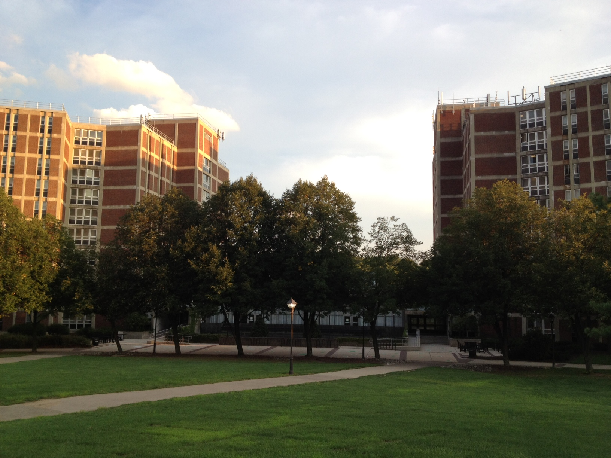
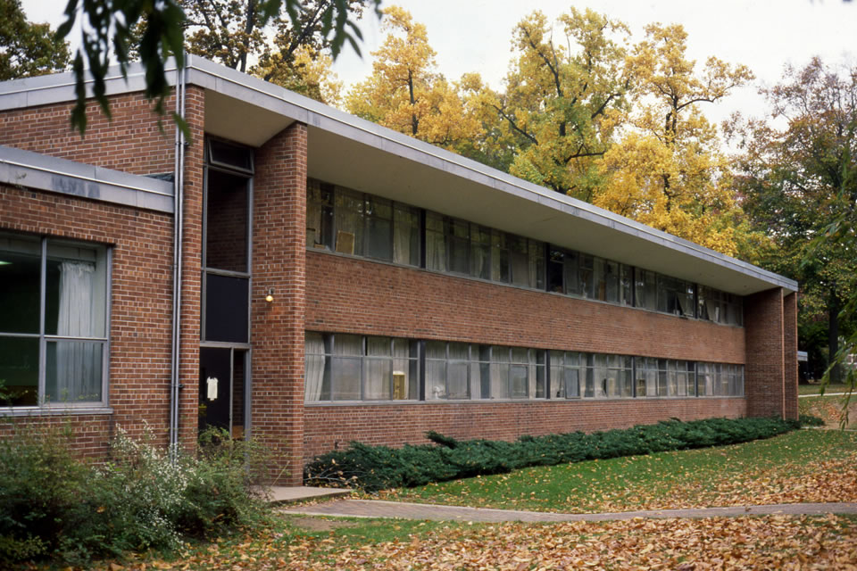
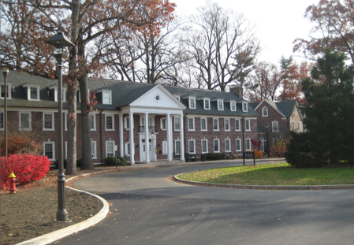

The "Towers" house the most freshmen. Each building contains 10 co-ed floors, each with their own bathrooms. There is a laundry room on every odd floor. Each room contains two bunkable beds, a sink, and a medicine cabinent. There are quad, double, and single rooms.
"Cent" has 3 floors in total and each section is girls only or boys only. Each floor has its own bathroom and beds are bunkable in each room. There are tripple, double, and single rooms.
"ABE" is located in a great location right across from the "Lib" and "Eick." There are three co-ed floors and each contains its own bathroom. There are double and single rooms.
